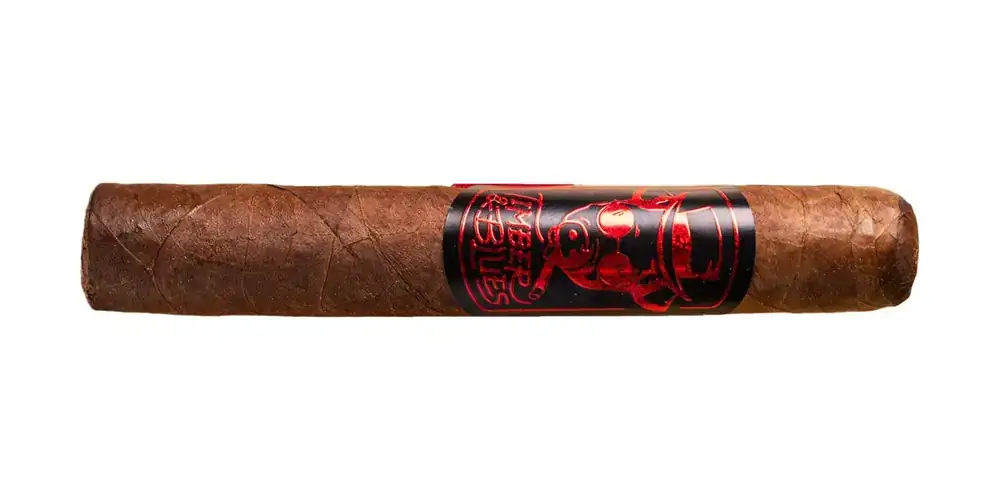

Timber and Blues
De El Club del Turro · Río Grande, Puerto Rico
Capote Nicaragua; tripa Seco San Andrés y Ligero de Puerto Rico. Colaboración con Timber and Blues. Fortaleza según la ficha: suave a media.
- Capa: Habano Ecuador
- Fortaleza: Media
- Vitolas: Robusto 5" x 50
Fuentes: 1
Ver Timber and Blues en la app, califícalo y guárdalo en Mi Hoja.